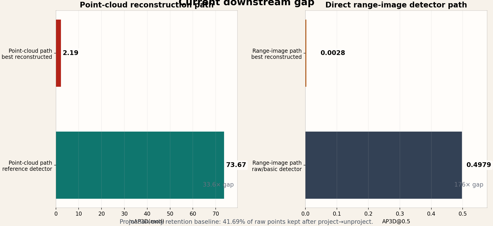

A detector-facing LiDAR compression pipeline that tries to preserve the information a downstream 3D detector actually needs, not just low-level reconstruction appearance.
Ongoing Thesis Project
Task-aware LiDAR compression for downstream 3D detection.
This thesis project studies a practical failure mode in LiDAR compression: a reconstruction can look reasonable, yet still destroy the signal a downstream 3D detector needs. The work builds a learned range-image compression pipeline, measures it in two detector-facing paths, and uses data-driven diagnostics to isolate where the information is being lost.
- Research in progress as of March 18, 2026
- Thesis-focused engineering project
- Point-cloud detector path
- Direct range-image detector path

Why This Project
What, why, and where it stands today
Standard compression metrics can miss the real failure. A codec may look acceptable visually while still breaking the detector that has to consume the output.
This is not a finished paper-result page. The strongest result today is clear bottleneck localization: the repaired detector baseline holds, while the codec path still causes the main downstream failure.
Engineering
How the thesis was engineered to isolate the real bottleneck

Path A
Point-cloud reconstruction path
Point cloud → range image → reconstructed point cloud → PointPillars. This is the harshest test of whether the codec preserves geometry all the way to a 3D detector endpoint.
Path B
Direct range-image detector path
Point cloud → range image → RangeDet. This removes the project-unproject loop and asks whether the detector still works when the codec output is fed directly into the range-image path.
Current status
The pipeline is usable enough to diagnose, not finished enough to oversell
The strongest story today is diagnostic: raw/basic detector behavior is repaired, while codec-driven artifact patterns remain visible and measurable.
Results
The current result is not a finished success. It is a strong diagnosis.


Current Status
What a reader should remember after one pass
The detector baseline is no longer the excuse
Track 2 raw/basic behavior is now strong enough that failure can be attributed to the codec path with much more confidence than before.
Projection itself already throws information away
The current workflow is fighting two problems at once: project-unproject sparsification and reconstruction artifacts introduced by the codec.
The next useful work is targeted, not broad
Mask fidelity, anti-banding recovery, and detector-aware auxiliary targets are more important right now than trying to oversell a final result.